WireView Pro II on the Corsair iCUE Nexus
Live per-wire current, total current and total power from a Thermal Grizzly WireView Pro II on the 640×48 iCUE Nexus. iCUE cannot show third-party sensors or web pages on the Nexus, so a small daemon (one Rust executable) paints the panel directly over USB.
Source and setup: github.com/jlobue10/wireview-nexus
Layouts

--layout combined · six per-wire bars, total current, total power, in/out temperatures
--layout per-wire · six wide per-wire bars with amps and watts
--layout total-current · total amps against the total limit, with average voltage, watts and in/out temperatures
--layout total-power · total watts against the cable rating, with amps and in/out temperaturesThemes
Same layouts, different palettes; every theme keeps its warning and critical colours apart from the accent. The Xeneon Edge widgets offer the same 25 as ?theme=.
--theme grizzly · Thermal Grizzly orange on black (default)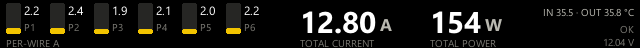
--theme corsair · yellow accent, orange warnings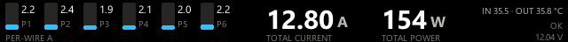
--theme ice · cyan accent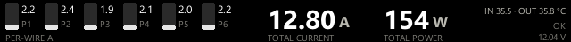
--theme mono · greyscale, alarms in colour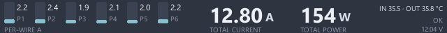
--theme nord · Nord frost blue on polar night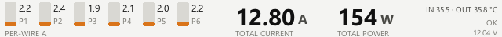
--theme light · dark text on a light background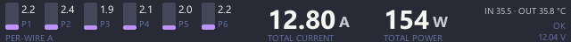
--theme dracula · Dracula purple on dark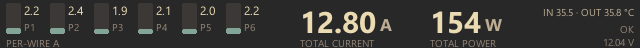
--theme gruvbox · Gruvbox dark, blue accent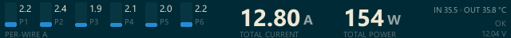
--theme solarized · Solarized dark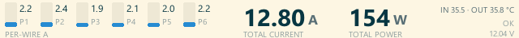
--theme solarized-light · Solarized light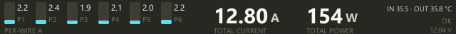
--theme monokai · Monokai cyan on dark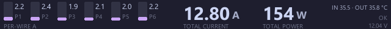
--theme catppuccin · Catppuccin Mocha mauve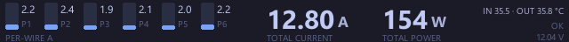
--theme tokyo-night · Tokyo Night blue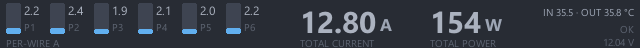
--theme one-dark · Atom One Dark blue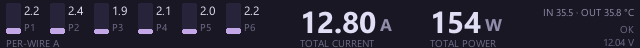
--theme rose-pine · Rose Pine iris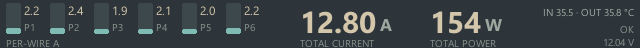
--theme everforest · Everforest aqua on green-grey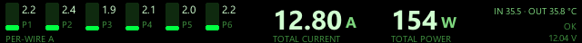
--theme matrix · green phosphor on black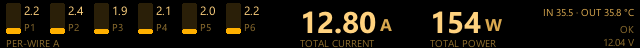
--theme amber · amber phosphor on black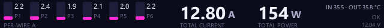
--theme cyberpunk · magenta neon on midnight blue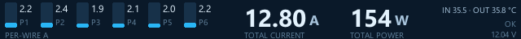
--theme ocean · sky blue on deep navy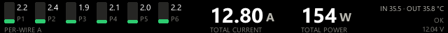
--theme emerald · green accent on black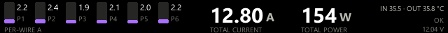
--theme violet · purple accent on black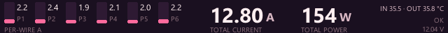
--theme sunset · pink accent on dark plum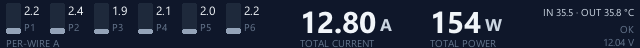
--theme slate · grey-blue on slate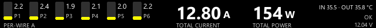
--theme high-contrast · yellow on black, maximum contrastHow it works
WireView Pro II ──USB serial──▶ wireview-nexus.exe ──HID frames──▶ iCUE Nexus
- Install with one PowerShell command:
powershell -ExecutionPolicy Bypass -c "irm https://raw.githubusercontent.com/jlobue10/wireview-nexus/main/install.ps1 | iex". It downloadswireview-nexus.exefrom the latest release, checks its SHA-256, and starts the daemon at logon. - The daemon reads the WireView directly over its USB serial port (no HWiNFO needed). Close the Thermal Grizzly WireView app and disable its auto-start; only one program can hold the port. If a wireview-xeneon-edge bridge is running, the daemon reads from it instead.
- Give the Nexus an empty screen in iCUE so iCUE stops redrawing over the daemon's frames.
Options
| Option | Default | Meaning |
|---|---|---|
--layout | combined | combined, per-wire, total-current, total-power |
--theme | grizzly | 25 themes, previewed above (installer -Theme) |
--wire-limit | 10.5 | Amps per wire treated as 100 % |
--total-limit | 55 | Amps total treated as 100 % |
--cable-w | cable's own rating | Cable rating in W |
--fps | 2 | Frames per second, from 0.2 to 60 |
--brightness | Backlight 0–100, set once at start | |
--source | auto | auto, bridge, serial, hwinfo |
--serial-port | auto-detect | COM port of the WireView |
--preview PNG | Render one frame to a file and exit |